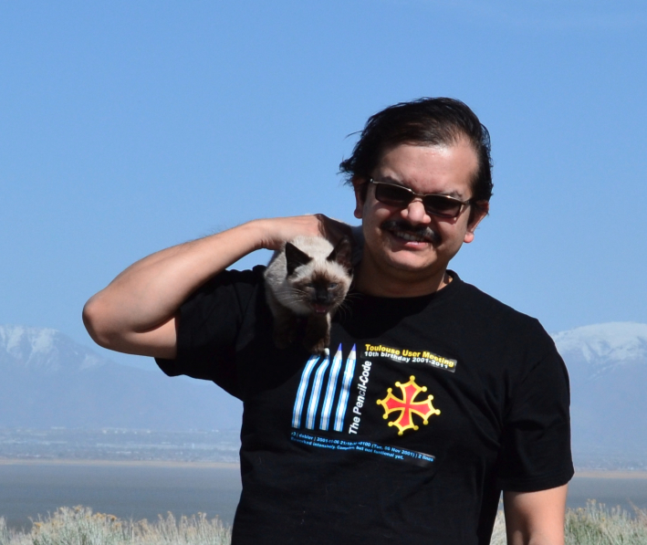

Date of Birth: 23 April 1976
Employment
- Faculty at Digital Futures,
Stockholm, 2025.
- Researcher with permanent contract, NORDITA
(January 2015 - present)
- Assistant Professor, NORDITA
(January 2010 - January 2015)
- Leverhume trust post-doctoral fellow, Astronomy Unit, School of
Mathematical Sciences, Queen Mary University of London (February
2007 - January 2010).
Mentor: Reza Tavakol
- Henri Poincare Postdoctoral Fellow, Lab. Casiopee, Observatoire de la Cote d'Azur.
Nice, France (February 2006 - January 2007).
Mentor: Uriel Frisch
- Visiting Associate Professor, Lab. Casiopee, Observatoire de la Cote d'Azur.
Nice, France (January 2005 - January 2006).
- Project Assistant, CCMT, Department of Physics, IISc.
(October 2004 - December 2004)
Education
- Doctor of Philosophy (Phd):
Thesis submitted: September 2004, Degree received: March 2005
Center for Condensed Matter Theory (CCMT),
Department of Physics, Indian Institute of Science (IISc),
Bangalore, India.
Supervisor: Rahul Pandit
Thesis:
Studies of Static
and Dynamic Multiscaling in Turbulence .
- Master's in (theoretical) physics: July 2000
Department of Physics, IISc, Bangalore
Thesis: Temporal Multiscaling in Homogeneous
Isotropic Turbulence: Numerical Studies of
the Navier-Stokes and Gledzer-Ohkitani-Yamada
Equations.
Supervisors: Rahul Pandit
Research Interests
My research in within the broad field of Applied Mathematics/Theoretical
Physics. My recent work can be broadly classified into the
following subdisciplines.
- Physics of Life
- Soft Matter
- Turbulence
- Astrophysics
Publications
About 90 papers in peer-reviewed journals.
For a complete list see
my google
scholar page.
Awards and Grants
- Grant to facilitate collaboration between Sweden and USA in health and life sciences,
Vinnova 2024-25,
“Mechanobiology of extracellular nanovesicles in association with
cancer”, jointly with
Apurba
Dev (PI, Uppsala University), and
Shanon
Stott (Mass. General Hospital)
- Visitor, Institute of Industrial
Science, Tokyo, 2021.
- Research grant from Wenner-Gren
foundation: Reconnection, radio observation and
switch-back. This grant could not be realised due to
Covid-19 lockdown.
- Research Grant from the
Swedish research council
titled Capsules in Flows (2017 – 2020). Total amount : 4.4 million SEK.
Extended to 2022 for interruption due to covid-19 pandemic.
- Young Investigator Grant of the
Swedish research council
titled Turbulence in dilute polymer solutions (2012 – 2014).
Total amount : 1.6 million SEK.
- Visiting Professor, Dept. of Physics, IIT-Bombay, 2018.
- Visiting Professor, Laboratoire J.A. Dieudonné,
Nice, 2012-13.
- Martin Forster medal for best PhD thesis in the division of physical and mathematical
sciences in Indian Institute of Science (2005).
- Senior and Junior Research Fellowship of Council for Scientific and Industrial Research, India.
Membership of Professional bodies: